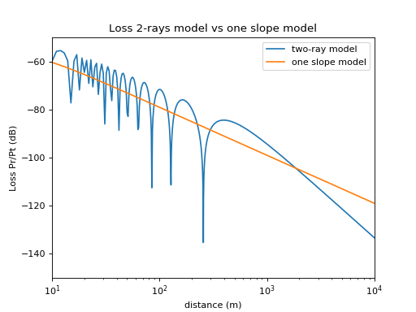
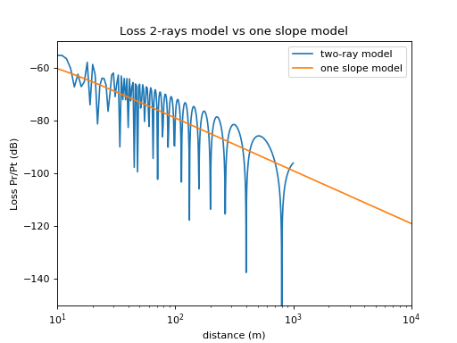

two_rays_flatearth¶
-
pylayers.antprop.loss.two_rays_flatearth(fGHz, **kwargs)¶ Parameters: p0 : transmitter position
(3 x Np1) array or (2,) array
p1 : receiver position
(3 x Np2) array or (2,) array
OR :
d : distance between Tx and Rx
(Np1,)
ht : Tx height
hr : Rx height
(Np1)
GtdB : float (0)
Transmitter Antenna Gain (dB)
GrdB : float(0)
Receiver Antenna Gain (dB)
fGHz : float (2.4)
frequency (GHz)
gamma : complex (-1.+0.j)
Reflexion coeff
dB : boolean (True)
return result in d
Returns: P :
received power
References
https://en.wikipedia.org/wiki/Two-ray_ground-reflection_model#As_a_case_of_log_distance_path_loss_model http://morse.colorado.edu/~tlen5510/text/classwebch3.html#x15-590003.3.3
Examples
>>> from pylayers.antprop.loss import * >>> NPT=10000 >>> x=np.array([0,0,8]) >>> x=x.reshape(3,1) >>> y = np.ones((3,NPT)) >>> y[0,:]=0 >>> y[1,:]=np.arange(NPT) >>> y[2,:]=2 >>> g0=1 >>> g1=1 >>> fGHz=2.4 >>> PL2R=two_rays_flatearth(p0=x,p1=y,fGHz=fGHz,GtdB=g0,GrdB=g1) >>> PL1R = PL(fGHz,x,y,2) >>> plt.semilogx(PL2R,label='two-ray model') >>> plt.semilogx(-PL1R[0,:],label='one slope model') >>> plt.axis([10,NPT,-150,-50]) >>> plt.title('Loss 2-rays model vs one slope model') >>> plt.xlabel('distance (m)') >>> plt.ylabel('Loss Pr/Pt (dB)') >>> plt.legend() >>> plt.show()(Source code, png, hires.png, pdf)
>>> d=np.arange(1,1000) >>> PL2Rd = two_rays_flatearth(d=d,ht=np.array([5]),hr=np.array([10]),fGHz=fGHz,GtdB=g0,GrdB=g1) >>> plt.semilogx(PL2Rd,label='two-ray model') >>> plt.semilogx(-PL1R[0,:],label='one slope model') >>> plt.axis([10,NPT,-150,-50]) >>> plt.title('Loss 2-rays model vs one slope model') >>> plt.xlabel('distance (m)') >>> plt.ylabel('Loss Pr/Pt (dB)') >>> plt.legend() >>> plt.show()
{kind=link}
{kind=link}
{kind=link}
{kind=link}